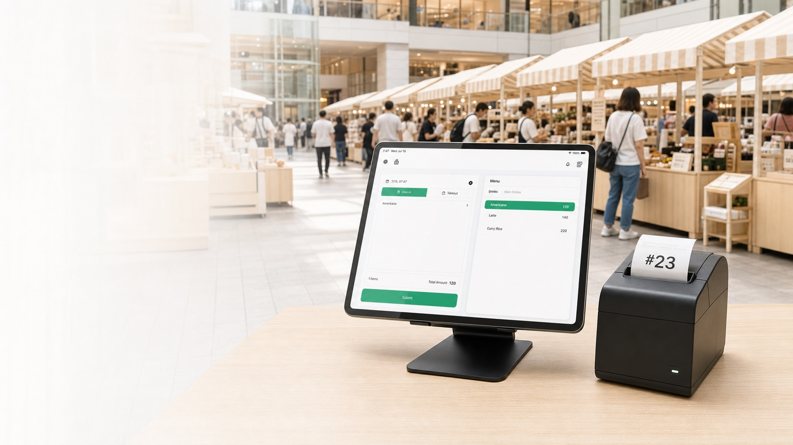
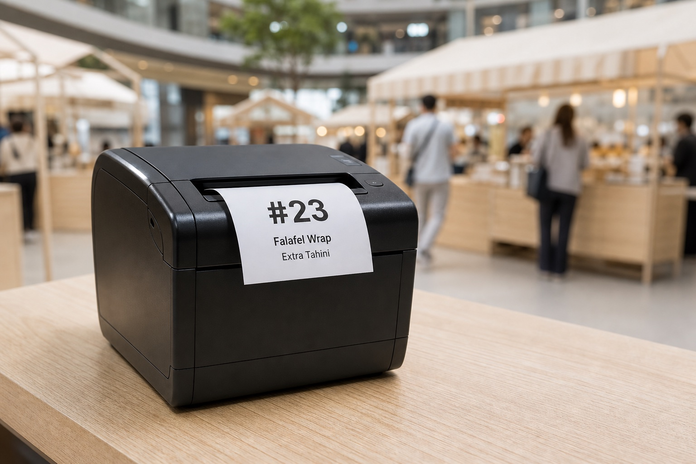
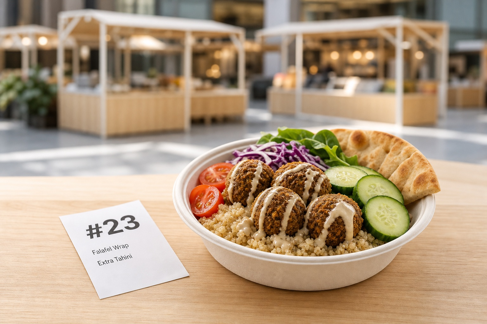
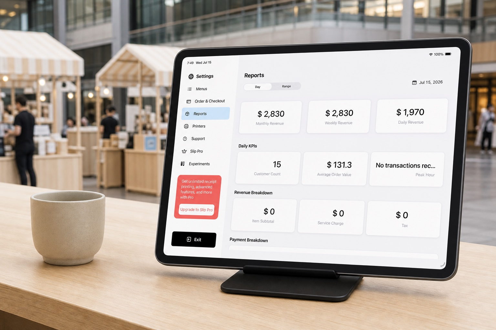

MARKET STALL POS
注文。マーケットへ。番号で受け取り。
Slip は注文受付から番号による受け渡しまでをひとつの流れにつなぎ、通信が不安定でも次の注文を受け続けられます。
Slip をダウンロード
登録不要
オフライン対応
注文番号を印刷
簡単な日次締め
マーケット屋台の業務フロー
01
注文を取る
iPad の Slip POS で商品、追加オプション、メモをすばやく入力。忙しい屋台でも迷わず使えます。
02
番号を印刷する
Slip はお客様用レシートを印刷し、調理伝票印刷を有効にすると、同じ注文番号を調理側にも届けられます。

03
マーケットを楽しんでもらう
お客様は伝票を持ってマーケットを見て回り、屋台は列を進めながら次の注文を調理できます。
04
番号を照合して受け渡す
お客様が戻ったら、同じ印刷番号を照合してから商品をお渡しします。

明確な集計で店じまい。
売上、返金、支払い記録、現金確認をひとつの日次レポートで見直し、安心して営業を終えられます。
